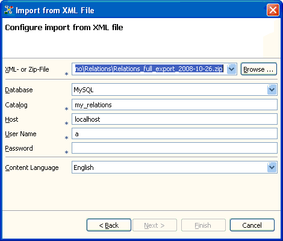

The content created and managed by the Relations application can be exported to an XML file. This export functionality is available both for content stored in the embedded database as well as for such content stored in an external database. Thus, exporting to an XML file is a future-proof way to backup the content. Such exportet content, then, can be transfered to another Relations database or to a completely different application.
To start the XML export, call the Export... wizard from the Data menu and select Export to XML File. The dialog page displayed after allows you to enter the XML or Zip file where to export the actual content of the Relations application.
Note 1: You have to provide a file suffix. By default, the application adds .xml as file ending.
In this case, the export file will be plain XML.
However, if you chose .zip, the application will export to a (zip) compressed XML file.
Note 2: The XML export is very fast. To export about 2'000 items with 4'000 relations needs about 5 seconds
and results in a file of 400 KB compressed data.
You can import the XML export into a new database catalog. You can import both in an embedded or an external database. To start the XML import, call the Import... wizard from the Data menu and select Import from XML File.

Import the content from a (zipped) XML file to a new database
In the wizard form displayed, you first have to enter the XML or Zip file containing the content of an XML export. Then, you have to provide the information about the database catalog to create and fill with the imported data. You can choose the embedded database or an external database as storage place for the data.
If you chose the embedded database, the only information you have to provide is the name of the catalog. You can't choose an existing database catalog (therefore, you can't accidentally overwrite existing data).
If you chose the option to import to an external database, you have to create an empty catalog in that database first. Having done this, you can enter the information needed to connect to this database. You have to specify where the database is installed (the host), the catalog in the database you want to import the data, and the user name and password needed to access this catalog.
After you have entered the data and clicked the Finish button, the application
starts the import. It first creates the tables needed to store the data. After it parses the import file
and creates the Term, Text, Person and Relations entries.
In the next step the application has to rebind the relations and to round up it creates a full text search index
for the newly created database.
Note: To import about 2'000 items with 4'000 relations needs about 5 minutes.